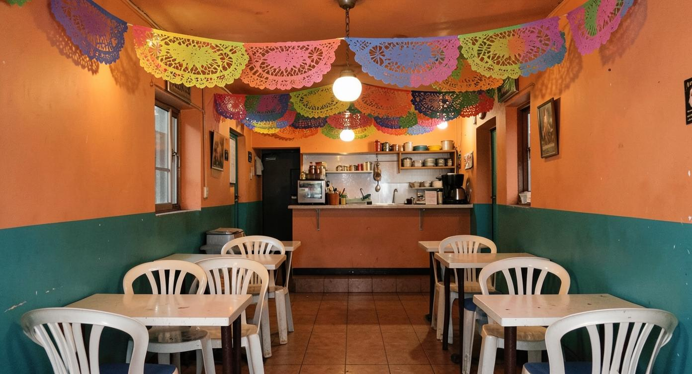
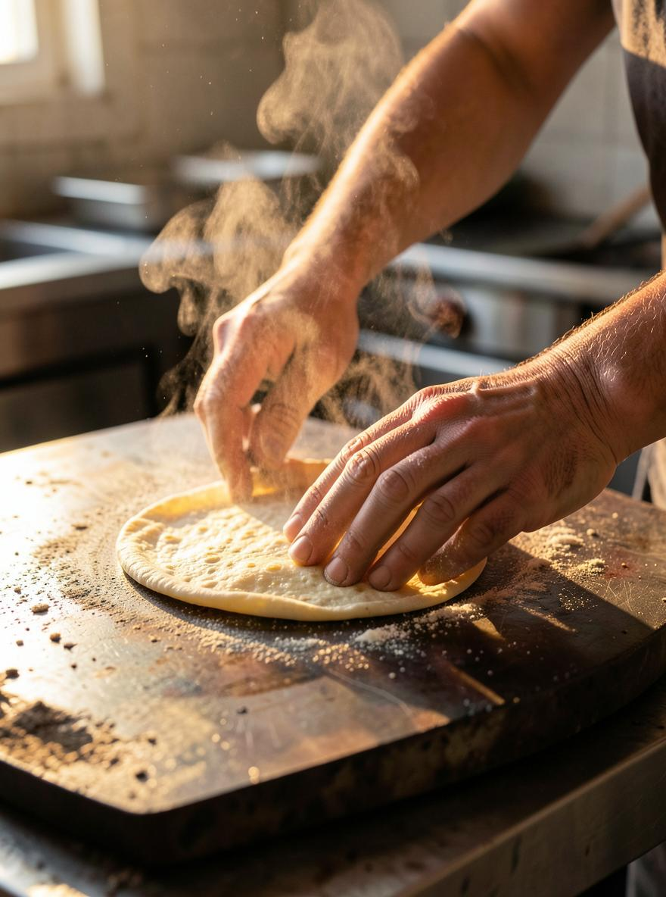

Home / Nuestra Casa
Our house.
Your table.
A mom & pop kitchen on Telephone Road, a few minutes from Hobby Airport. Two things we never skip: the tortilla press and the welcome.
La historia
It starts
with masa.
Every plate here begins the same way: corn pressed and cooked on the comal, flour rolled by hand. That’s the part people notice first — the tortilla tastes like something, not like a wrapper.
From there it’s Matamoros cooking. Trompo al pastor carved to order. Birria braised slow, served with consomé you’d drink straight. Gorditas and sopes shaped by hand, tortas stacked tall enough to share, menudo on the weekends when the whole neighborhood seems to show up at once.
We’re not a chain and we’re not trying to be. If you’re regular, we know your order. If you’re new, sit down and we’ll tell you what to get.


“More than a taqueria — it’s the corner of Houston where somebody remembers your order.” Why people come back

En la comunidad
Same road.
Same people.
We’re on Telephone Road, south of Hobby — a stretch of Houston that’s been feeding people for generations. Our regulars drive in from across the city, and a lot of them have been coming since before the shop had a full dining room.
Follow along on Instagram and TikTok for the daily specials, the trays and whatever came off the trompo that morning.
Come sit with us.
10414 Telephone Rd, Houston. Open seven days a week from 8 AM.